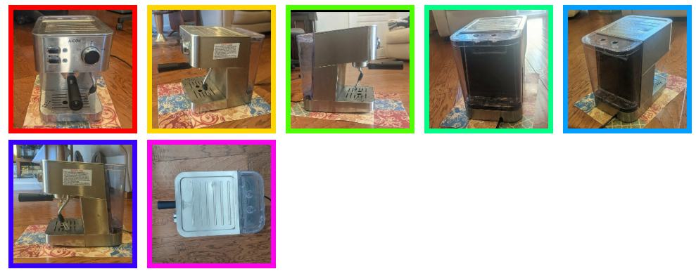
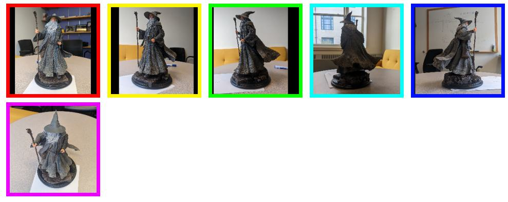
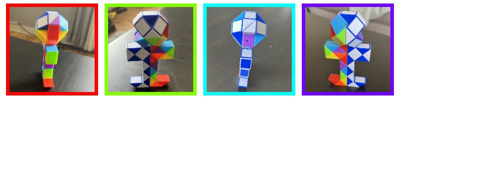
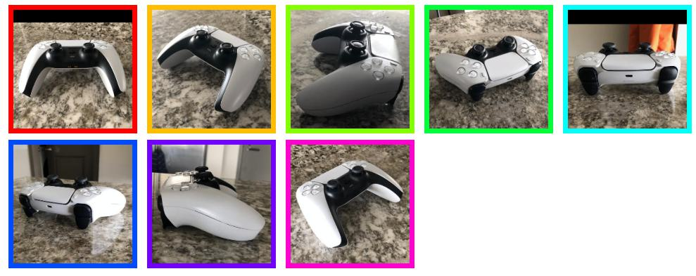
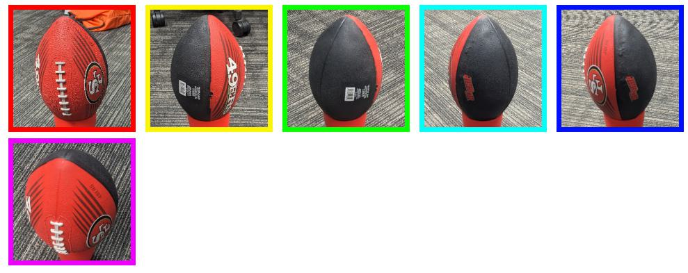
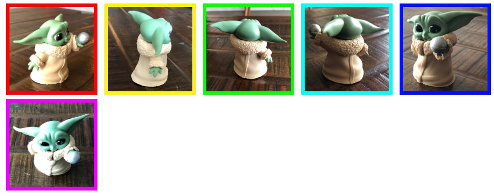
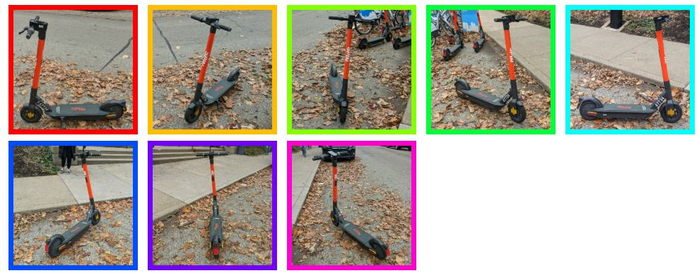

Estimating 6D Camera Poses from Sparse Views. RelPose++ extracts per-image features
(with positionally encoded image index and bounding box parameters) and jointly processes these
features using a Transformer.
We used an energy-based framework to recover coherent sets of camera rotations by using a
score-predictor for pairs of relative rotations.
RelPose++ also predicts camera translations by defining an appropriate coordinate system
that decouples the ambiguity in rotation estimation from translation prediction.
Altogether, RelPose++ is able to predict accurate 6D camera poses from 2-8 images.
Self-Captured Data







Abstract
We address the task of estimating 6D camera poses from
sparse-view image sets (2-8 images). This task is a vital
pre-processing stage for nearly all contemporary (neural)
reconstruction algorithms but remains challenging given
sparse views, especially for objects with visual symmetries
and texture-less surfaces. We build on the recent RelPose
framework which learns a network that infers distributions
over relative rotations over image pairs. We extend this approach
in two key ways; first, we use attentional transformer
layers to process multiple images jointly, since additional
views of an object may resolve ambiguous symmetries in
any given image pair (such as the handle of a mug that becomes
visible in a third view). Second, we augment this
network to also report camera translations by defining an
appropriate coordinate system that decouples the ambiguity
in rotation estimation from translation prediction. Our final
system results in large improvements in 6D pose prediction
over prior art on both seen and unseen object categories
and also enables pose estimation and 3D reconstruction for
in-the-wild objects.
RelPose++: Recovering 6D Poses from Sparse-view Observations
Amy Lin*, Jason Y. Zhang*, Deva Ramanan, and Shubham Tulsiani
@article{lin2023relposepp,
title={RelPose++: Recovering 6D Poses from Sparse-view Observations},
author={Lin, Amy and Zhang, Jason Y and Ramanan, Deva and Tulsiani, Shubham},
journal={arXiv preprint arXiv:2305.04926},
year={2023}
}
We would like to thank Samarth Sinha for useful discussion and thank Sudeep Dasari and Helen Jiang for
their
feedback on drafts of the paper. This work was supported in part by the NSF GFRP (Grant No. DGE1745016),
Singapore
DSTA, a CISCO gift award, and CMU Argo AI Center for Autonomous Vehicle Research.
Webpage Template.